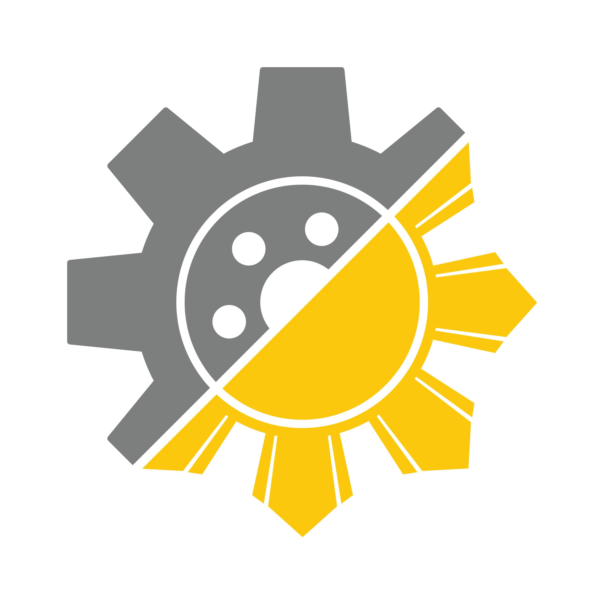

FUSION @ UCIFind your place in FUSION.
Answer three questions to find your FUSION archetype and programs to check out.
1 / 3
YOUR RESULT
Finding your
FUSION archetype...
YOUFUSION

FUSION @ UCIAnswer three questions to find your FUSION archetype and programs to check out.
YOUR RESULT